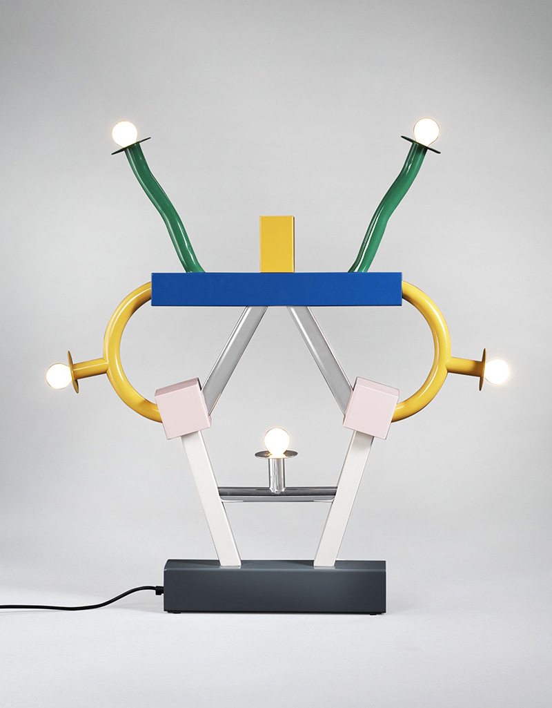
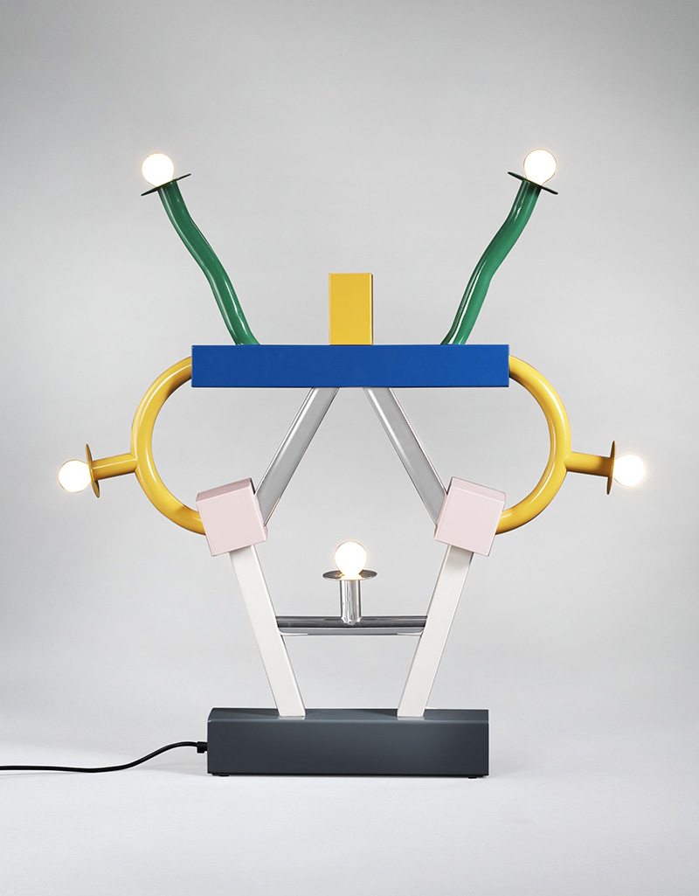

Estética visual de los 80s
Cultura visual · Música · Diseño
Una exploración visual de los códigos estéticos que definieron la cultura pop de los
años ochenta: el VHS, las tipografías expresivas y la fusión entre
música, diseño y tecnología.
Algunos posters clásicos de la época:
Grupo Memphis
Diseño radical · Cultura pop · Geometría
El Grupo Memphis fue un colectivo de diseñadores italianos que en los años ochenta rompió con la sobriedad del diseño moderno. Su estilo se caracterizó por el uso de colores intensos, patrones geométricos, formas asimétricas y una actitud lúdica frente a los objetos y el espacio.
Sus referencias provenían del pop art, el diseño gráfico experimental, los videojuegos, los videoclips musicales y la cultura urbana de la época.
Esta estética influyó directamente en la moda, la publicidad, el packaging y la identidad visual de múltiples marcas durante la década.
 
